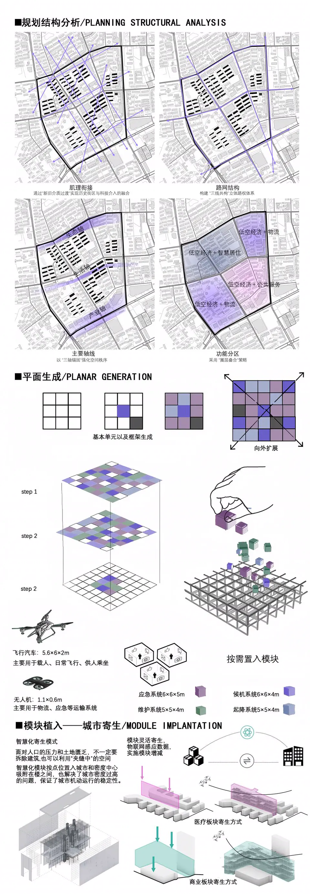
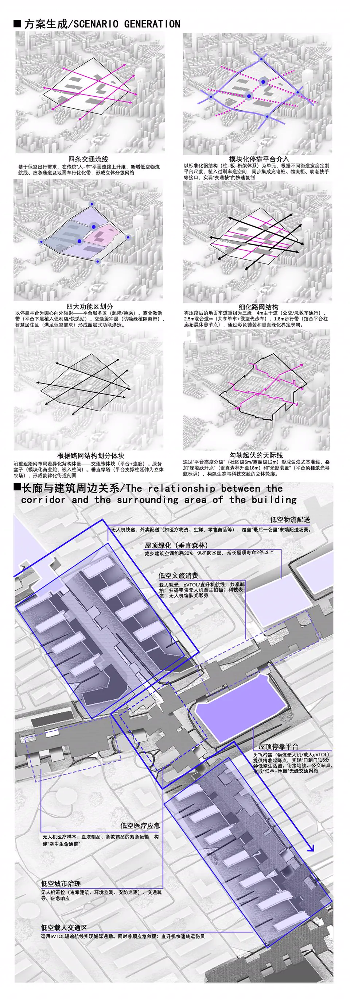
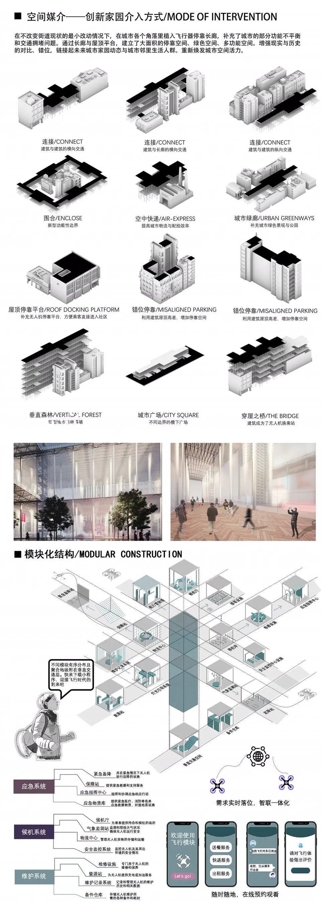
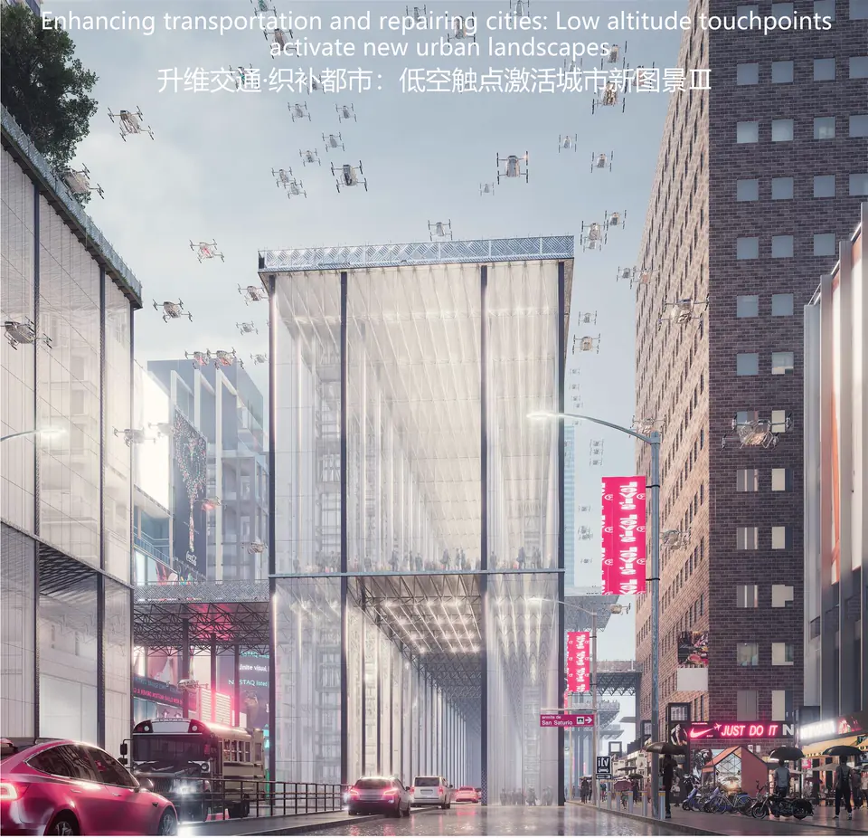
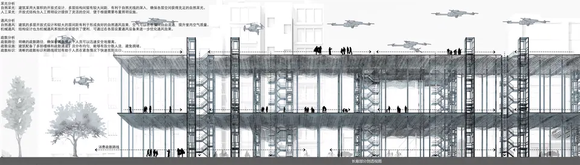
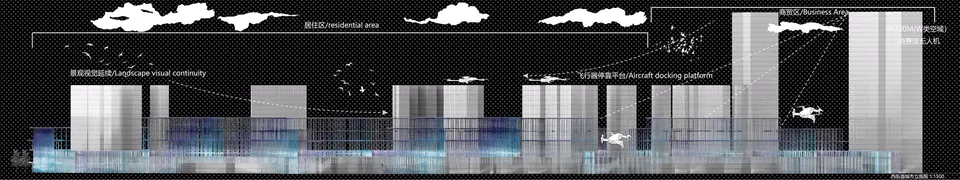

PROJECT 06
城市设计Urban Design
低空触点与街道空间的立体织补。Low-altitude touchpoints stitch new layers into street life.
概念图CONCEPT
以低空经济为契机，以飞行器停靠平台为立体媒介，将飞行器停靠与街道空间重构缝合，推动出行观念向新型交通转变。
Seizing the low-altitude economy, docking platforms become a three-dimensional medium stitching aircraft stopovers into street space, shifting mobility ideas towards new transport.

区位、场地、肌理分析LOCATION, SITE & FABRIC
场地位于青岛黄岛区，四周由黄埔江路、长江路、太行山路与井冈山路围合，占地约 0.8 km²。场地周边建筑密度较低、公共开放空间较多；场地内部建筑密度较高、公共开放空间较少。场地内部道路呈两横两纵分布，将场地分割成 8 个地块，呈网格状街区。
The site sits in Huangdao, Qingdao, framed by four roads, about 0.8 km². The surroundings are low-density with ample open space, while the interior is denser with less; two horizontal and two vertical roads cut the site into eight grid-like blocks.

城市矛盾、设计目标、方案策略CONTRADICTIONS, GOALS & STRATEGY
城市矛盾之锁：①公共服务盲区之锁——职住分离加剧通勤压力；②交通效率之锁——商业网点与居住区距离失衡；③情感孤独之锁——城市居民的情感孤独。城市矛盾之匙：①建立城市飞行器停靠网点平台；②网点（线、面）内部增设商业服务设施；③增设娱乐设施。设计目标与方案策略：空中连廊、空中阳台等休闲空间，线下无人配送与线上互动反馈结合。
The locks: ① blind spots in public service — job-housing separation strains commuting; ② traffic inefficiency — commerce and housing are out of balance; ③ emotional loneliness. The keys: ① a network of city aircraft docking platforms; ② commercial services added inside the network; ③ leisure facilities. Goals and strategy: sky corridors and balconies as leisure space, offline unmanned delivery combined with online interactive feedback.

规划结构、平面生成、模块植入PLANNING, PLANAR GENERATION & IMPLANTATION
规划结构梳理四条交通流线与四大功能区，以路网划分体块并逐步生成基本单元与框架。智慧化模块利用建筑之间的夹缝空间按点位植入，回应城市密度与机动运行。
The planning structure sorts four traffic flows and four functional zones, using the road network to shape blocks, basic units and frames. Smart modules occupy gaps between buildings at specific points, responding to urban density and mobility.


方案生成与长廊周边关系SCENARIO & CORRIDOR
方案生成：模块化停靠平台介入，勾勒起伏的天际线。长廊与建筑周边关系：在不改变街道现状的最小改动下，在城市各个角落植入飞行器停靠长廊。
Scenario generation: modular docking platforms intervene, sketching an undulating skyline. Corridor relations: with minimal change to existing streets, aircraft docking corridors are implanted across the city.


总平面图MASTERPLAN
总平面图：飞行器停靠网点与商业、娱乐设施沿「线、面」展开，重构街道与停靠空间的关系。
Master plan: docking networks with commercial and leisure facilities unfold along lines and areas, rebuilding the relation between street and stopover space.

空间媒介、模块化结构INTERVENTION & MODULAR STRUCTURE
围合、连接、空中快线与屋顶停靠平台构成空间操作的基本动作；图版中的飞行汽车尺寸为 5.6×6×2m，无人机为 1.1×0.6m，并配置应急、维护、候机与起降等模块。
Enclosure, connection, air express routes and rooftop platforms form the basic spatial moves. The boards specify flying cars at 5.6×6×2 m and drones at 1.1×0.6 m, alongside emergency, maintenance, waiting and take-off-landing modules.


抗震分析SEISMIC ANALYSIS
抗震分析图展示地面变形缝装置、地中梁免震构件及柱脚、肋与柱、主次梁等节点的连接构造。
The seismic study presents ground movement-joint devices, seismic-isolation components at underground beams, and connection details at column bases, ribs, columns and primary or secondary beams.

效果图RENDERING
效果图：低空触点激活的城市新图景。
Rendering: a new urban vision activated by low-altitude touchpoints.


采光、通风、疏散分析LIGHT, VENTILATION & EVACUATION
开放式多层间距用于引入自然光，自然通风与机械通风结合；图版同时标示多层楼梯、疏散通道与标识组织。
Open multi-level spacing admits natural light, while natural and mechanical ventilation are combined. The board also marks stairs, escape routes and wayfinding across the levels.


城市立面图URBAN ELEVATION
城市立面图（1:1500）：商贸区与居住区之间由 eVTOL 飞行器停靠平台连接，物流与载客系统沿街展开，景观视觉延续。
Urban elevation (1:1500): eVTOL docking platforms link business and residential areas; logistics and passenger systems run along the street as the landscape view continues.


生活场景效果图STREET LIFE SCENES
办公与社交场所、空中连接通道直达小区、垂直绿化补充城市绿色；街区中植入城市图书馆、边界开放活动广场、城市绿化长廊与街区社交连廊。
Workplaces and social spaces, air corridors reaching residential areas, vertical greening adding urban green; city libraries, open-edge activity plazas, green corridors and neighbourhood social links are woven into the blocks.